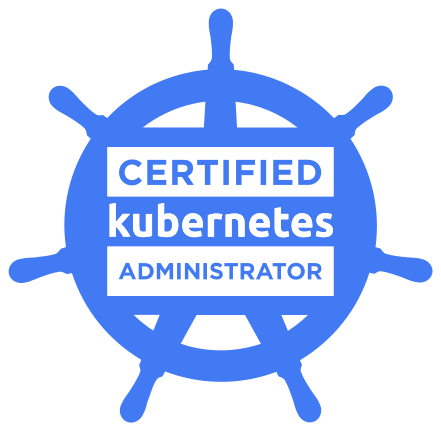

// Site Reliability | DevOps | Platform | Infrastructure
Currently working as a Senior Site Reliability Engineer. Driven by curiosity and a relentless pursuit of knowledge
hello@singhbalbir.comJanuary 2023 - Present
> Migrated legacy workloads to next-gen k8s platform
> Built DR solution reducing RTO (Recovery Time Objective ) from 6h to 30min
> Mentor and provide guidance to distributed team of senior SREs (US, EMEA & APAC)
> Ensured 99.99% uptime across 100+ microservices by optimizing k8s clusters
> Program lead for Guidewire Production Readiness (GPR) to assess and provision new services to production
August 2015 - January 2023
> Leading the effort to migrate on-prem services our cloud partner AWS
> Program lead for load balancer infrastructure which was processing 10K rps
> Analyze system performance, identify problems, design, develop, and implement solutions
April 2014 - July 2015
> Working on Amazon Web Services as a Cloud Computing Infrastructure
> Mentor for the new joinee and the junior people in the team
> Ensure scalability and reliability of production servers
> Automated the infra using Chef and Cloud Formation
November 2011 - February 2014
> Assist in the roll-out and deployment of new product features
> Installations to facilitate our rapid iteration and constant growth
> Served the role of Technical escalation Manager during the India TZ
> Build the team of 10 and started NOC Operation from Bangalore office
September 2010 - November 2011
> Designed and automated DR which reducing failover time by 50%
> Migration of business critical application from SJ to RCDN data center
> SME of messaging Infrastructure for Tibco implementation of JMS, BPIM and WSG
March 2008 - August 2010
> Installing, Configuring and deploying the RedHat and FreeBSD server
> Ensuring data flow across pipelines and delivering data to customers within SLA
> Building system, application installation, testing, cluster management & validating delivered data
July 2007 - January 2008
> Management of the regional datacenter
> Configuration, deployment and management of the internal services in APAC and EMEA